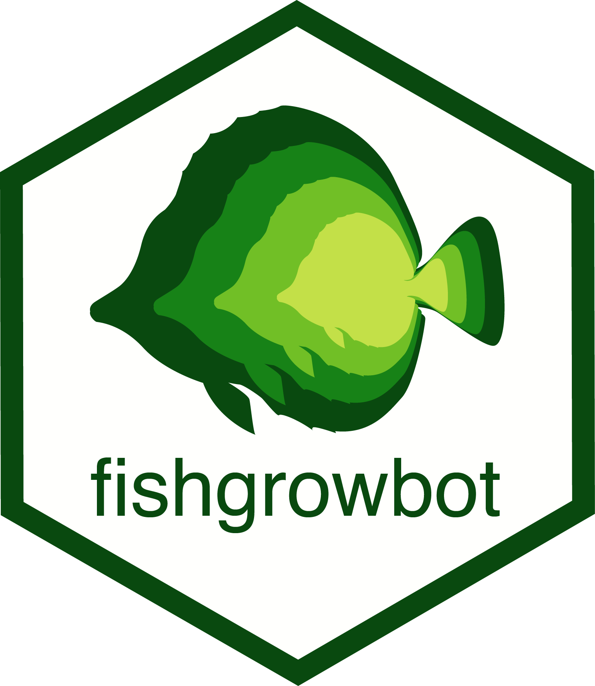

The fishgrowbot package provides a tool to conduct back-calculation based on otolith readings and fit the Von Bertalanffy growth curve with a hierarchical structure, both in a Bayesian framework.
It contains:
* A function bcalc() to perform the back-calculations which yields length-at-age estimations with measures of uncertainty.
* A function called growthreg() to fit the Von Bertalanffy growth model.
* Functions to visualize results.
Installing and loading fishgrowbot
fishgrowbot uses Markov Chain Monte Carlo simulations provided by stan. Therefore, the first step is to install stan.
GitHub
The best way to install the latest version of fishgrowbot is to install it from GitHub.
install.packages("devtools") devtools::install_github("nschiett/fishgrowbot", dependencies=TRUE) library(fishgrowbot)
Citation
## Warning in citation("fishgrowbot"): no date field in DESCRIPTION file of package
## 'fishgrowbot'
## Warning in citation("fishgrowbot"): could not determine year for 'fishgrowbot'
## from package DESCRIPTION file
##
## To cite package 'fishgrowbot' in publications use:
##
## Nina M. D. Schiettekatte (NA). fishgrowbot: Fish Growth Curves
## Through Back-Calculation of Otoliths Rings in a Bayesian Framework. R
## package version 0.0.0.9000.
##
## A BibTeX entry for LaTeX users is
##
## @Manual{,
## title = {fishgrowbot: Fish Growth Curves Through Back-Calculation of Otoliths Rings in a Bayesian Framework},
## author = {Nina M. D. Schiettekatte},
## note = {R package version 0.0.0.9000},
## }